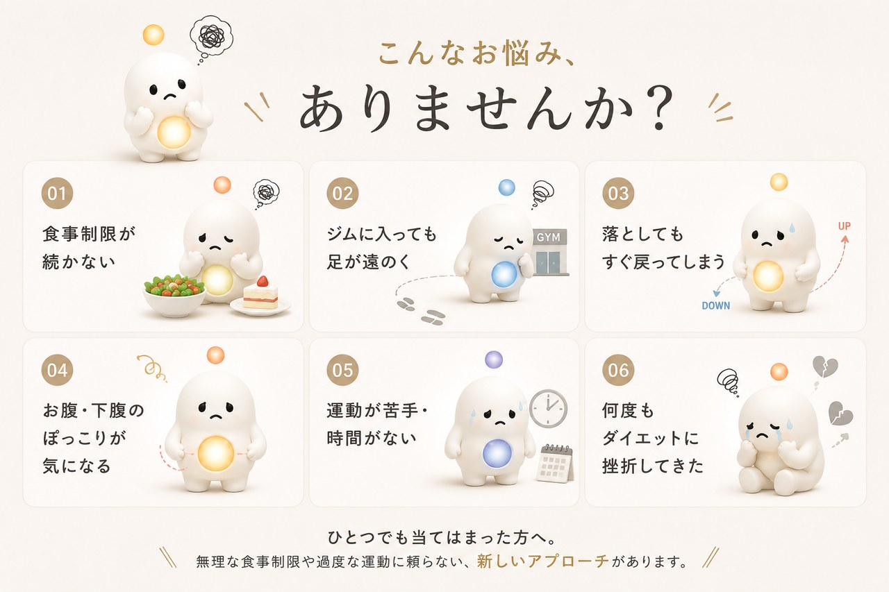

FOR YOU ／ 痩せたい方へ
痩せたい、あなたへ。落としても戻る、を終わりに。
がんばらなくても、大丈夫。寝ながら、太りにくい体へ。
がんばらなくても、大丈夫。寝ながら、太りにくい体へ。
「また続かなかった」——そう思っているあなたも、大丈夫。
VISUAL LABOは、がんばれない日も続けられる体型管理サロンです。

ダイエットがうまくいかない背景には、じつは「冷え」が隠れているといわれます。体が冷えると代謝が落ち、エネルギーを使いにくく、ためこみやすい状態に。VISUAL LABOはまず、自分では届かない深部を高周波でしっかり温めることから。冷えて固まったお腹まわりをゆるめ、めぐりを促し、“落とす前の土台”を整えます。だから、無理な食事制限だけに頼らずにすみます。
「腹筋をしても下腹が変わらない」——それは、表面の筋肉ばかりで、奥のインナーマッスルが使えていないからかもしれません。EMSは、自分では動かしにくい腹筋・インナーマッスルに電気で直接アプローチ。しかも“温めてゆるんだあと”に動かすから、寝たままでも効率よく筋肉を働かせ、引き締めと、姿勢を支える筋肉づくりをサポートします。
どんなに良い方法も、続かなければ戻ってしまう。だからVISUAL LABOは“がんばらない”を仕組みにしました。横になって受けるだけ。きつい運動も食事制限も必須ではなく、月額制でいつでも解約OK。忙しくても、三日坊主だった方でも続けやすい——続けられることこそ、リバウンドしにくい体への一番の近道です。※効果・感じ方には個人差があります
「がんばれない自分」を、責めなくていい。
ジムや食事制限が続かなかったのは、意志の弱さではありません。続けられる仕組みがなかっただけ。横になるだけで続けられる場所で、もう一度。※効果・感じ方には個人差があります。
初回体験は、BODY MAINTENANCE MENU 90（90分・¥3,000〜）。
高周波で温め、手技でほぐし、EMSで動かす本格ケアです。
痩せたい方も。姿勢が気になる方も。
どちらも、温める→動かすの同じケアで。